랜덤 선정 6개 대여소를 대상으로 수요 예측
절차와 해석 가능성을 점검한 파일럿 보고서다.군집화 결과 제시가 아니라, 제한된 수의
대여소만으로도 예측 파이프라인이 안정적으로 작동하는지 확인하는 데
있다.report_restored_6station_draft.md를 발표형으로
재정리했다.패턴 기반 feature + Ridge 회귀를 기준
모델로 사용했다.현재: 군집화는 생략하고 개별 대여소 예측에 집중향후: 강남구 전체 확장 시 군집화를 도입해 대여소 유형
차이를 반영대여소 단위(station-level)| 분류 축 | 예시 피처 |
|---|---|
| 시간대 반납 구조 | arrival_7_10_ratio, arrival_11_14_ratio,
arrival_17_20_ratio |
| 유입/유출 구조 | morning_net_inflow,
evening_net_inflow |
| 교통 접근성 | subway_distance_m,
bus_stop_count_300m |
구조 정리 단계로 필요해진다.

이번 6개 대여소 예측 결과가 아니라,
향후 전체 대여소 확장 분석의 해석 프레임을 보여주는 참고
예시다.station-level 군집화로 대여소 유형화
| 항목 | 값 |
|---|---|
| 관측 기간 | 2023-01-01 00:00:00 ~
2025-12-31 23:00:00 |
| 공휴일 개수 | 56 |
| 기준 분할 | train=2023, valid=2024,
test=2025 |
| 자산 | 개수 |
|---|---|
| station 원천 csv | 20 |
| 공휴일 기준 csv | 20 |
| 패턴 공식 csv | 20 |
| 가중치 csv | 20 |
| 튜닝 결과 csv | 20 |
| 성능 지표 csv | 20 |
| feature 중요도 csv | 20 |
| 고오차 지점 csv | 20 |
| 항목 | 결과 |
|---|---|
| station별 row 수 | 모두 26304 |
| unique_time | 모두 26304 |
| 결측 | 0 |
| 음수 대여/반납 | 없음 |
| duplicate time row | 0 |
예측 구조 설계와 오차 해석에 둘 수
있었다.train: 2023년valid: 2024년test: 2025년day_type: weekday,
offday| split | day_type | rows | rental_mean | return_mean |
|---|---|---|---|---|
| train | offday | 56640 | 1.2911 | 1.3941 |
| train | weekday | 118560 | 1.7291 | 1.9181 |
| valid | offday | 57600 | 1.2688 | 1.3616 |
| valid | weekday | 118080 | 1.7358 | 1.9396 |
| test | offday | 58080 | 1.0250 | 1.1125 |
| test | weekday | 117120 | 1.4745 | 1.6507 |
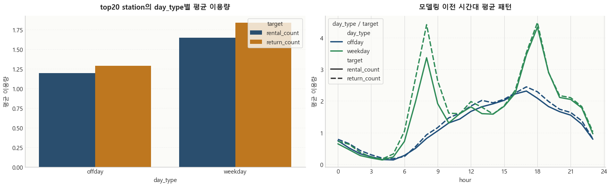
weekday가 offday보다 평균 대여·반납량이
높았다.day_type별 시간 패턴을 기본 형태로 만들고, 여기에
월·연도·시간 보정치를 얹는 편이 더 해석 가능했다.| Feature | 역할 |
|---|---|
base_value |
요일유형별 기본 시간 패턴 |
month_weight |
월/계절 단위 수준 보정 |
year_weight |
연도별 수준 이동 보정 |
hour_weight |
세부 시간대 편차 보정 |
pattern_prior |
패턴 기반 1차 예측값 |
corrected_pattern_prior |
시간 보정까지 반영한 최종 prior |
alpha를 통한 과적합 제어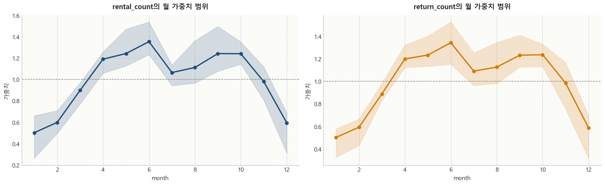
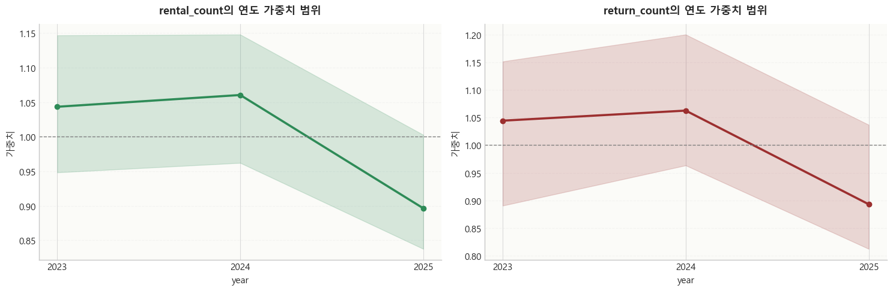
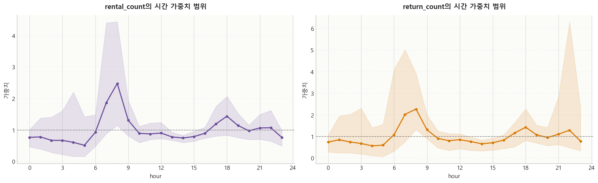
month_weight는 계절성, year_weight는
연도별 수준 차이, hour_weight는 세부 시간대 오차를
반영한다.hour_weight는 출근·퇴근 피크처럼 반복적으로
발생하는 시간대 오차를 보정하는 데 중요하다.year_weight는 해당 연도의 실제 데이터를 보고
계산되므로, 완전히 새로운 연도를 미리 고정적으로 예측하는 변수라기보다
사후적 보정값에 가깝다.| target | 대표 alpha 분포 |
|---|---|
| rental_count | 0.001가 가장 많고, 일부 station은 1000까지
사용 |
| return_count | 100 비중이 높고, 0.001, 10,
1000이 함께 분포 |
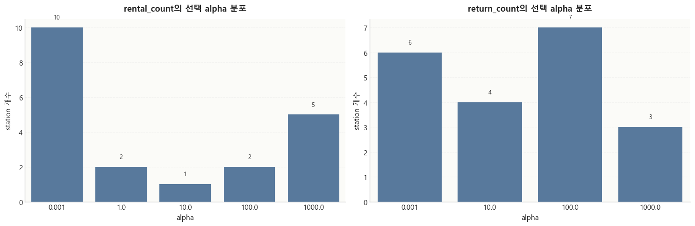
| target | test RMSE | test MAE | test R^2 |
|---|---|---|---|
| rental_count | 1.4124 | 0.9889 | 0.3498 |
| return_count | 1.5161 | 1.0562 | 0.3781 |
return_count가 rental_count보다 평균 R^2가
조금 더 높았다.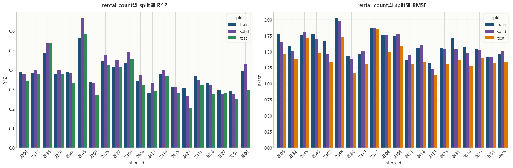
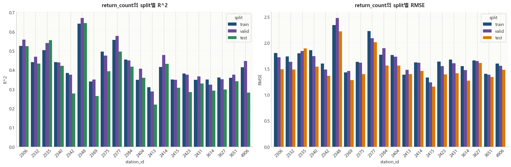
2348 포스코사거리(기업은행)2335 3호선 매봉역 3번출구앞2377 수서역 5번출구2384 자곡사거리2306 압구정역 2번 출구 옆2375 수서역 1번출구 앞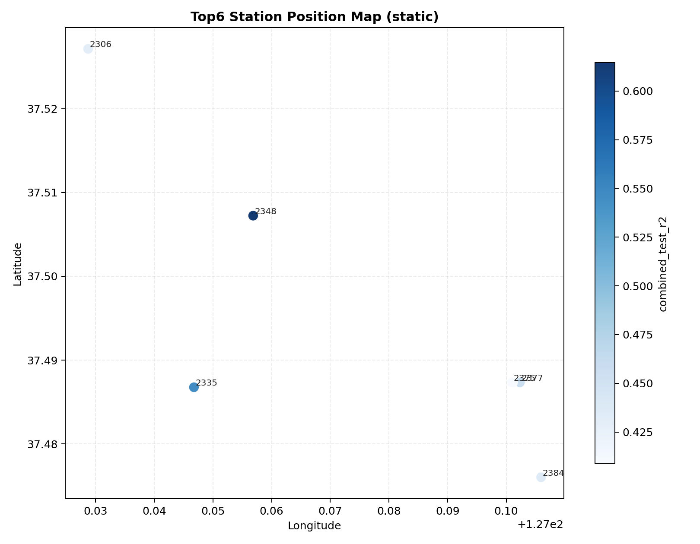
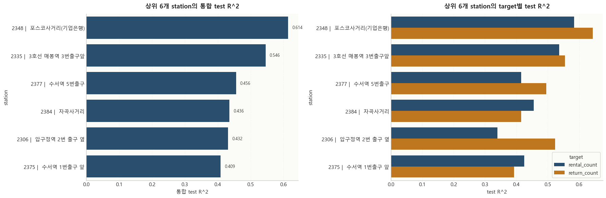
| target | 1순위 | 2순위 | 3순위 |
|---|---|---|---|
| rental_count | corrected_pattern_prior (0.5548) |
pattern_prior (0.1575) |
hour_weight (0.1406) |
| return_count | corrected_pattern_prior (0.5494) |
pattern_prior (0.1490) |
hour_weight (0.1465) |
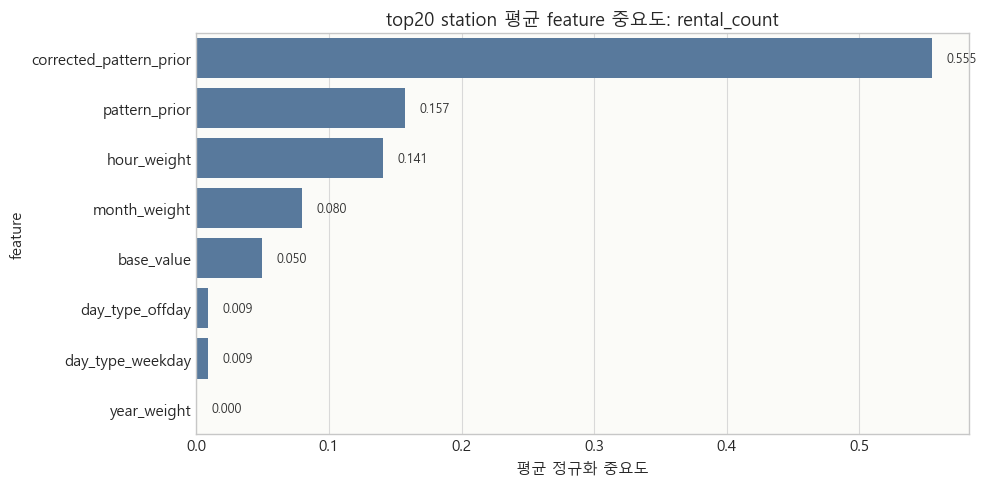
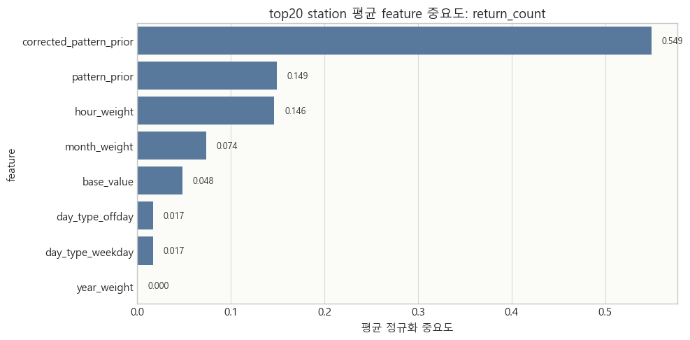
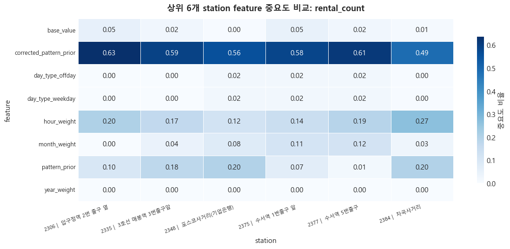
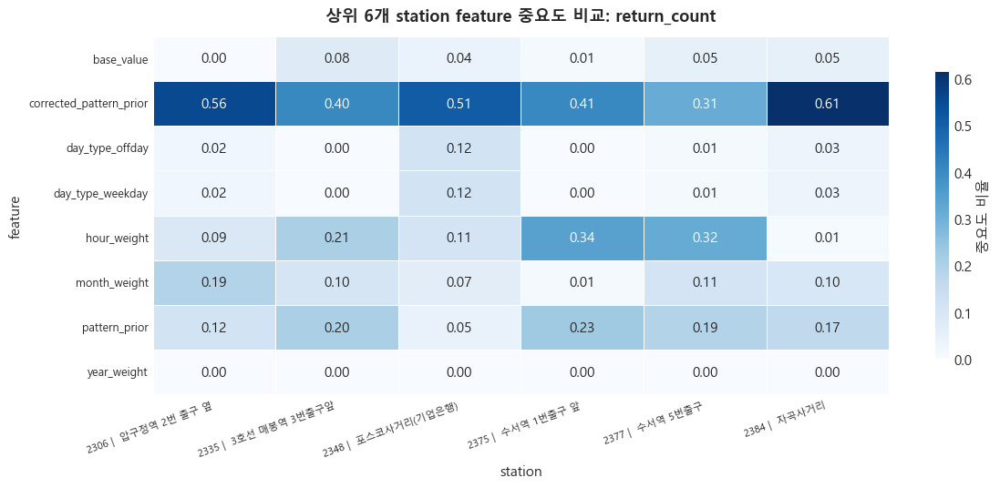
corrected_pattern_prior에 집중됐다.| 구분 | 관찰 결과 |
|---|---|
| station별 큰 오차 | 2348, 2377, 2335에서
상대적으로 크게 관찰 |
| 시간대 hotspot | 주로 17~19시 |
| 월별 hotspot | 4~6월, 9~10월 구간에서 반복 |
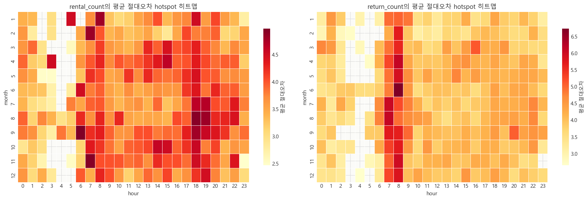
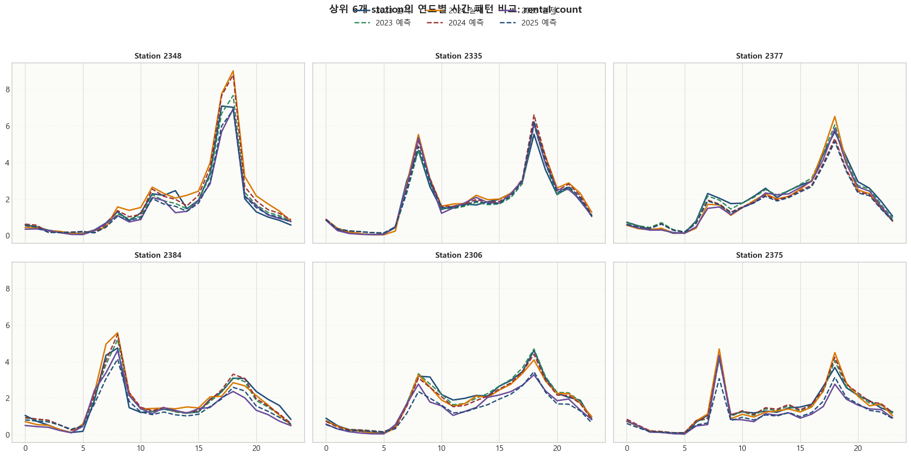
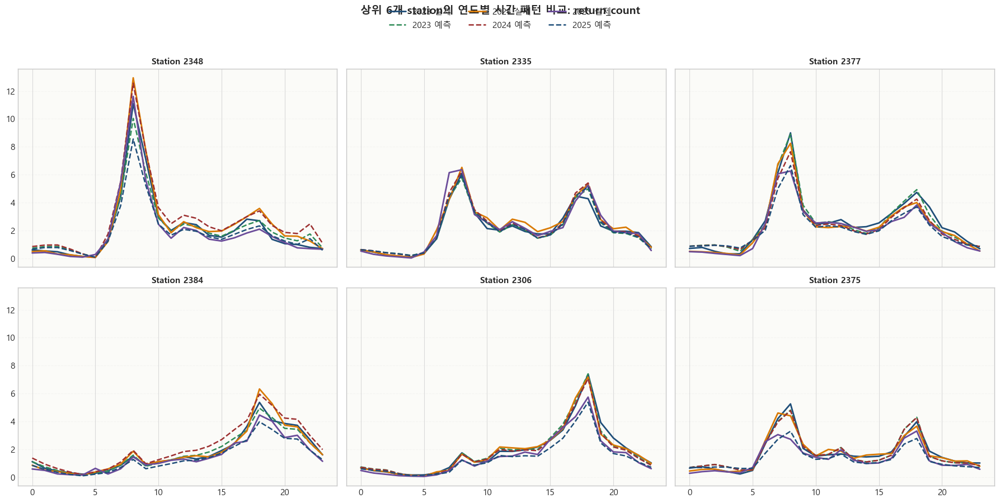
6개 대여소 파일럿이라는 현재 분석 범위를
명확히 하고, 군집화를 “향후 전체 확장 시 필요한 단계”로 재배치했다.패턴 기반 feature + Ridge 회귀 기준
모델로서 충분히 해석 가능했다.station-level 군집화
재도입다음 시점 재고 = 현재 재고 - 예측 rental_count + 예측 return_count